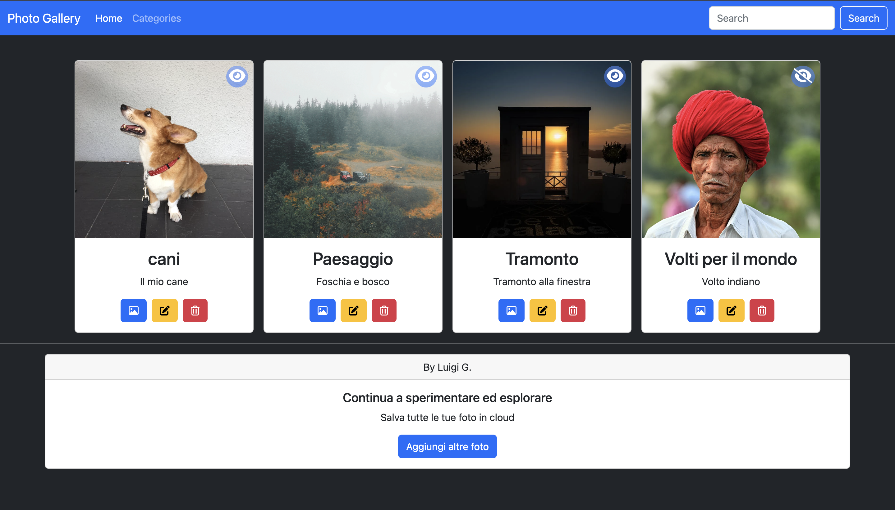
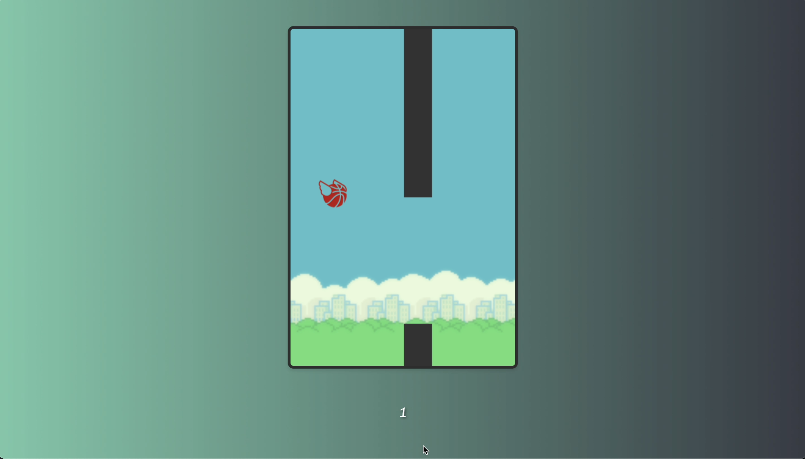

Latest Project



Credo nella formazione continua e per questo due anni fa ho deiso di reinventarmi iniziando un nuovo percorso nella mia vita che mi ha portato a far diventare le mie passioni, opportuinatà per la mia carriera. Ho lavorato sia in team che da solo e so adattarmi molto alle esigenze del contesto in cui mi trovo. Le sfide mi stimolano e le ritengo ottime opportunità di crescita personale e professionale.
Download CVSono Luigi, un appassionato Junior Full Stack Developer che si dedica alla creazione di applicazioni complete, sia per il front-end che per il back-end. Il mio obiettivo è quello di creare soluzioni innovative e funzionali per i clienti. Per quanto riguarda il front-end, ho esperienza nella creazione di siti web responsivi e nell'utilizzo di tecnologie come HTML, CSS e JavaScript. In particolare, ho lavorato con Vue.js, un framework moderno e flessibile che consente di sviluppare interfacce utente interattive e reattive. Per quanto riguarda il back-end, ho lavorato con diverse tecnologie, tra cui PHP e Laravel, Java e Spring. Ho esperienza nella gestione dei database e nell'utilizzo di MySQL. Inoltre, ho imparato a lavorare con database relazionali come Dbeaver. Sono in grado di utilizzare strumenti come Git per la gestione del codice, garantendo una collaborazione efficace e una tracciabilità del lavoro svolto. Sono sempre alla ricerca di nuove sfide e di ulteriori opportunità di crescita professionale, pronti ad imparare nuove tecnologie e nuovi linguaggi.
My github